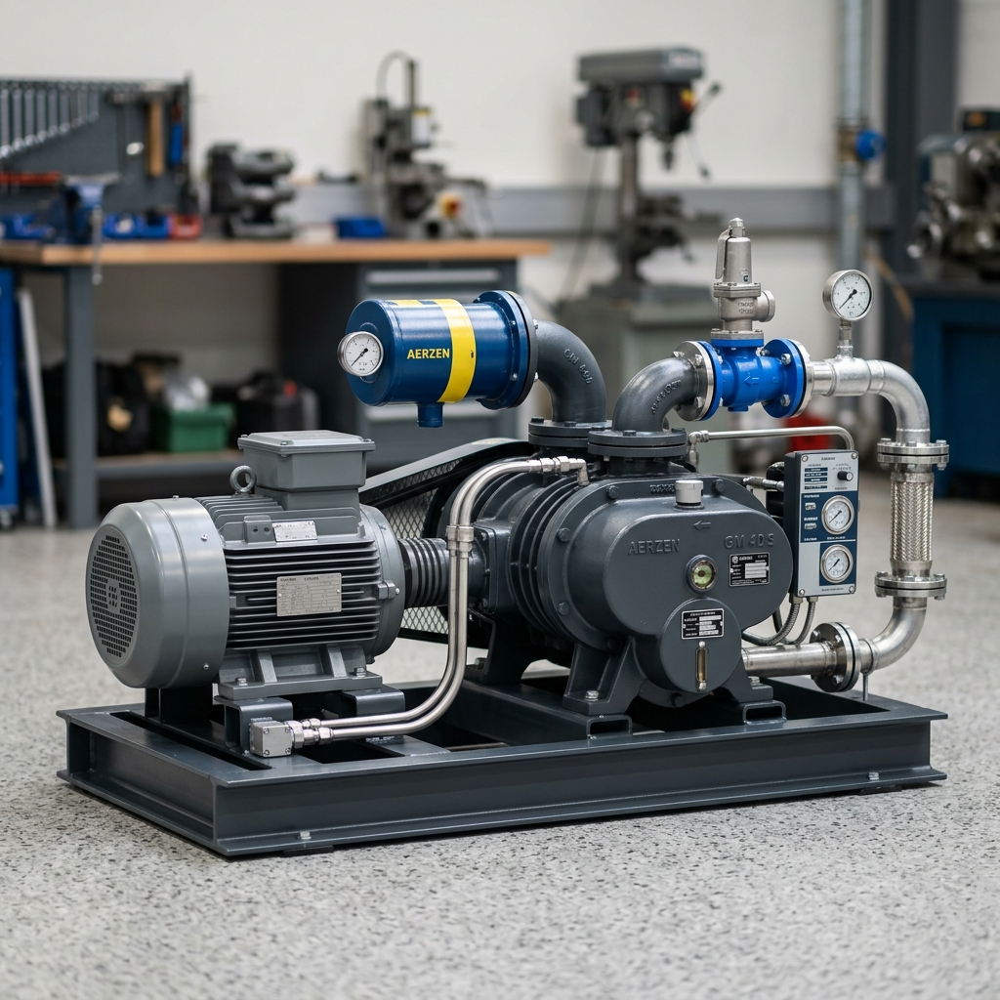

Concrete Category Solutions
Cement & Flyash Silo Tanks
VAK Industries designs premium quality vertical silo tanks for high capacity dry powder storage. Engineered to prevent powder consolidation and withstand weathering.
Available Models & Technical Specifications
| Model | Cement Cap. | Flyash Cap. | Silo Diameter | Silo Height |
|---|---|---|---|---|
| Silo 100T | 100 T | 60 T | 3250 mm | 12.5 mtr |
| Silo 150T | 150 T | 90 T | 3600 mm | 14.5 mtr |
| Silo 200T | 200 T | 125 T | 4000 mm | 14.5 mtr |
Foundation parameters and heights are adaptable to suit concrete batching plant requirements.

Complete Silo Setup Description
Silo Tank
Vertical steel shell holding bulk powders. Features safety railings, ladder structure, feed pipes, and rigid legs.
Accessories
Air filters (Top/Bottom), butterfly discharge valves, pressure relief valves, and bin aeration vibrators.
Screw Conveyor
Rotating screw mechanism inside a tubular housing that feeds cement/flyash from silo to the batching plant scales.
Blower
Bulker feeding root blower systems supplying high volumetric air flow to push powders dynamically into silos.
VAK Engineering Edge: Problem Analysis
Why VAK silos outlast standard market alternatives. We study failure cases to engineer fail-safe solutions.

Common Issue
Leakage in Silo Shells
Root Cause
Welding done locally at site with gaps; more shell joints.
VAK Action Taken
Zero site welding. 100% factory welding with automatic welding and sheet coil cuts to reduce joints.
Common Issue
High wear of feeding pipe
Root Cause
Short bend radius used to reduce costs.
VAK Action Taken
Long radius bends utilized to distribute wear, increasing lifetime significantly.
Common Issue
Cement blockages in hopper
Root Cause
Poor bin aeration, requiring manual hammering.
VAK Action Taken
Automated fluidization system with provisions for multiple vibratory bin aerators.
Common Issue
Paint peeling off shell
Root Cause
Improper steel surface preparation before painting.
VAK Action Taken
Rigorous pre-paint steel cleaning processes + premium Polyurethane (PU) industrial paint coatings.
Common Issue
Fast rusting & corrosion
Root Cause
Use of scrap steel or sub-standard raw sheets.
VAK Action Taken
100% fresh, quality-tested steel sheets conforming to Indian Standard (IS) norms.
Silo Accessories (Cosben & Wam Make)
We equip our silos with world-leading industrial components to guarantee operational safety and zero dust emission.
Air Filters
Top or Bottom pulse-jet cleaned filters. Prevents cement dust escaping during bulker pressure filling.
Butterfly Valves
Cosben/Wam make heavy-duty valve installed at hopper exit to seal cement output cleanly.
Pressure Relief Valves
PRV protects the silo shell from structural collapse caused by positive or vacuum air pressures.
Vibratory Bin Aerators
Pneumatic aerators inject dry air into concrete silos to fluidize material flow and prevent bridging.
Screw Conveyor Systems
High throughput feeding systems designed for moving cement, flyash, and mineral powders smoothly to batching plant containers.
Screw Conveyor Models
- 168 mm ID - Standard capacity batching scale feeder
- 219 mm ID - High capacity batch plant feeder
- 273 mm ID - High-volume industrial transfer screw
Site Case Inclination Angles
Recommended installation angles to prevent reverse flow slips:
Cement Feeder
45° Max
Flyash Feeder
30° Max
Modular Design
Flanged sections, spline coupling shafts, and durable hanger bearings.
Bulker Feeding Systems
Volumetric pneumatic transfer units. We engineer Root Blower sets utilizing Tri-Lobe blower components to reduce pressure peaks and vibrations.
Twin Lobe Root Blower
Standard Market Product
- Pulsating air flow causes pipeline wear
- High operating vibration levels
- Bearings and gears suffer short lifecycles
- High discharge pressure variations
Tri Lobe Root Blower
VAK Group Engineered Solution
- Higher + Steady air flow rate
- Extremely low vibration / Noise levels
- Reduced loads on bearings and gear tooths
- Smooth, steady pressure discharge line

Mobile Skid Platforms
VAK Group offers structural steel skid frames allowing silos to be erected securely without civil concrete foundation works.
Mobile Skid Features
- Heavy Duty Steel Framing: Designed to handle maximum silo load capacities.
- Zero Foundation Cost: Avoid long concrete curing delays, set up silos directly on site.
- Site Relocations: Makes silos modular assets that can be disassembled and moved quickly.
Project Applications
Highly recommended for short-term road contracting projects, bridge building sites, and temporary concrete precast works.
Interested in Concrete Category Products?
Get custom size blueprint drawings and WhatsApp inquiries directly with our sales team.